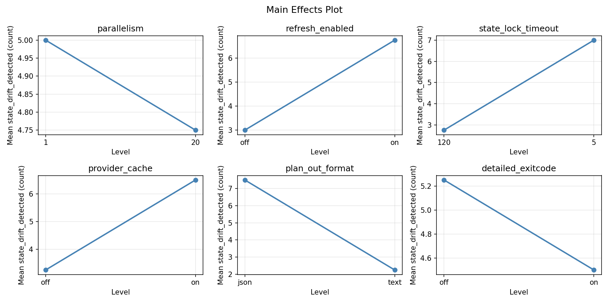
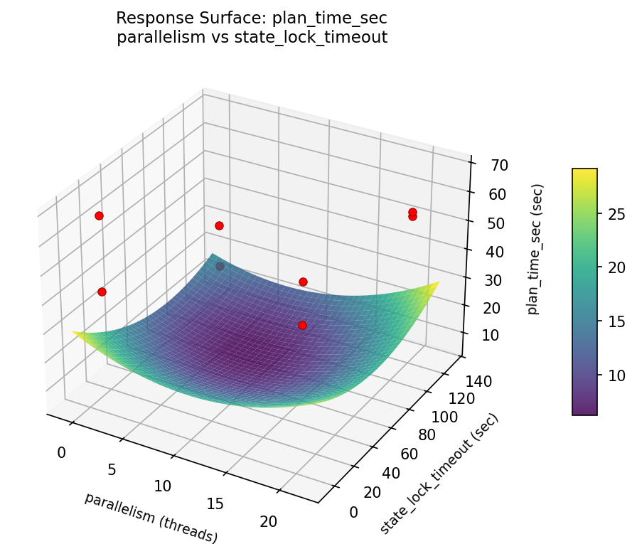
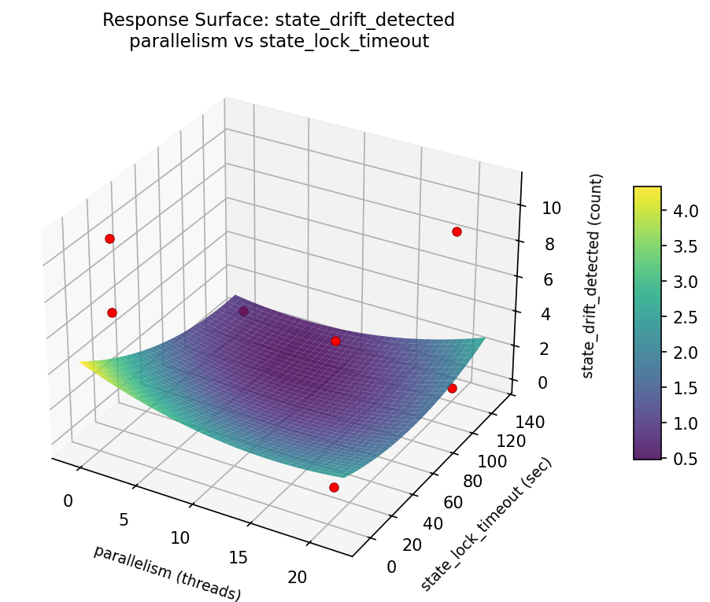

Summary
This experiment investigates terraform plan optimization. Plackett-Burman screening of 6 Terraform parameters for plan time and state drift detection.
The design varies 6 factors: parallelism (threads), ranging from 1 to 20, refresh enabled, ranging from off to on, state lock timeout (sec), ranging from 5 to 120, provider cache, ranging from off to on, plan out format, ranging from text to json, and detailed exitcode, ranging from off to on. The goal is to optimize 2 responses: plan time sec (sec) (minimize) and state drift detected (count) (maximize). Fixed conditions held constant across all runs include backend = s3, provider = aws.
A Plackett-Burman screening design was used to efficiently test 6 factors in only 8 runs. This design assumes interactions are negligible and focuses on identifying the most influential main effects.
Key Findings
For plan time sec, the most influential factors were state lock timeout (39.4%), refresh enabled (17.5%), parallelism (16.8%). The best observed value was 17.4 (at parallelism = 20, refresh enabled = off, state lock timeout = 5).
For state drift detected, the most influential factors were refresh enabled (32.7%), detailed exitcode (32.7%), state lock timeout (21.2%). The best observed value was 11.0 (at parallelism = 1, refresh enabled = on, state lock timeout = 5).
Recommended Next Steps
- Follow up with a response surface design (CCD or Box-Behnken) on the top 3–4 factors to model curvature and find the true optimum.
- Consider whether any fixed factors should be varied in a future study.
- The screening results can guide factor reduction — drop factors contributing less than 5% and re-run with a smaller, more focused design.
Experimental Setup
Factors
| Factor | Low | High | Unit |
|---|
parallelism | 1 | 20 | threads |
refresh_enabled | off | on | |
state_lock_timeout | 5 | 120 | sec |
provider_cache | off | on | |
plan_out_format | text | json | |
detailed_exitcode | off | on | |
Fixed: backend = s3, provider = aws
Responses
| Response | Direction | Unit |
|---|
plan_time_sec | ↓ minimize | sec |
state_drift_detected | ↑ maximize | count |
Configuration
{
"metadata": {
"name": "Terraform Plan Optimization",
"description": "Plackett-Burman screening of 6 Terraform parameters for plan time and state drift detection"
},
"factors": [
{
"name": "parallelism",
"levels": [
"1",
"20"
],
"type": "continuous",
"unit": "threads"
},
{
"name": "refresh_enabled",
"levels": [
"off",
"on"
],
"type": "categorical",
"unit": ""
},
{
"name": "state_lock_timeout",
"levels": [
"5",
"120"
],
"type": "continuous",
"unit": "sec"
},
{
"name": "provider_cache",
"levels": [
"off",
"on"
],
"type": "categorical",
"unit": ""
},
{
"name": "plan_out_format",
"levels": [
"text",
"json"
],
"type": "categorical",
"unit": ""
},
{
"name": "detailed_exitcode",
"levels": [
"off",
"on"
],
"type": "categorical",
"unit": ""
}
],
"fixed_factors": {
"backend": "s3",
"provider": "aws"
},
"responses": [
{
"name": "plan_time_sec",
"optimize": "minimize",
"unit": "sec"
},
{
"name": "state_drift_detected",
"optimize": "maximize",
"unit": "count"
}
],
"settings": {
"operation": "plackett_burman",
"test_script": "use_cases/79_terraform_plan_optimization/sim.sh"
}
}
Experimental Matrix
The Plackett-Burman Design produces 8 runs. Each row is one experiment with specific factor settings.
| Run | parallelism | refresh_enabled | state_lock_timeout | provider_cache | plan_out_format | detailed_exitcode |
|---|
| 1 | 20 | on | 120 | off | text | off |
| 2 | 1 | off | 120 | on | text | off |
| 3 | 1 | on | 5 | on | text | on |
| 4 | 20 | on | 120 | on | json | on |
| 5 | 1 | on | 5 | off | json | off |
| 6 | 20 | off | 5 | on | json | off |
| 7 | 1 | off | 120 | off | json | on |
| 8 | 20 | off | 5 | off | text | on |
Step-by-Step Workflow
1
Preview the design
$ python doe.py info --config use_cases/79_terraform_plan_optimization/config.json
2
Generate the runner script
$ python doe.py generate --config use_cases/79_terraform_plan_optimization/config.json \
--output use_cases/79_terraform_plan_optimization/results/run.sh --seed 42
3
Execute the experiments
$ bash use_cases/79_terraform_plan_optimization/results/run.sh
4
Analyze results
$ python doe.py analyze --config use_cases/79_terraform_plan_optimization/config.json
5
Get optimization recommendations
$ python doe.py optimize --config use_cases/79_terraform_plan_optimization/config.json
6
Generate the HTML report
$ python doe.py report --config use_cases/79_terraform_plan_optimization/config.json \
--output use_cases/79_terraform_plan_optimization/results/report.html
Features Exercised
| Feature | Value |
|---|
| Design type | plackett_burman |
| Factor types | continuous (2), categorical (4) |
| Arg style | double-dash |
| Responses | 2 (plan_time_sec ↓, state_drift_detected ↑) |
| Total runs | 8 |
Analysis Results
Generated from actual experiment runs using the DOE Helper Tool.
Response: plan_time_sec
Top factors: state_lock_timeout (39.4%), refresh_enabled (17.5%), parallelism (16.8%).
Pareto Chart

Main Effects Plot

Response: state_drift_detected
Top factors: refresh_enabled (32.7%), detailed_exitcode (32.7%), state_lock_timeout (21.2%).
Pareto Chart

Main Effects Plot

Response Surface Plots
3D surfaces fitted with quadratic RSM. Red dots are observed data points.
plan time sec parallelism vs state lock timeout

state drift detected parallelism vs state lock timeout

Full Analysis Output
=== Main Effects: plan_time_sec ===
Factor Effect Std Error % Contribution
--------------------------------------------------------------
state_lock_timeout -24.9750 5.9932 39.4%
refresh_enabled 11.1250 5.9932 17.5%
parallelism -10.6250 5.9932 16.8%
detailed_exitcode 7.4250 5.9932 11.7%
provider_cache -4.8750 5.9932 7.7%
plan_out_format -4.3750 5.9932 6.9%
=== Interaction Effects: plan_time_sec ===
Factor A Factor B Interaction % Contribution
------------------------------------------------------------------------
parallelism refresh_enabled 24.9750 16.9%
plan_out_format detailed_exitcode -24.9750 16.9%
parallelism state_lock_timeout -11.1250 7.5%
provider_cache detailed_exitcode 11.1250 7.5%
refresh_enabled state_lock_timeout 10.6250 7.2%
provider_cache plan_out_format 10.6250 7.2%
refresh_enabled provider_cache 7.4250 5.0%
state_lock_timeout plan_out_format 7.4250 5.0%
parallelism detailed_exitcode 6.8750 4.7%
refresh_enabled plan_out_format -6.8750 4.7%
state_lock_timeout provider_cache -6.8750 4.7%
parallelism plan_out_format 4.8750 3.3%
refresh_enabled detailed_exitcode -4.8750 3.3%
parallelism provider_cache 4.3750 3.0%
state_lock_timeout detailed_exitcode -4.3750 3.0%
=== Summary Statistics: plan_time_sec ===
parallelism:
Level N Mean Std Min Max
------------------------------------------------------------
1 4 53.4750 9.6209 42.2000 65.3000
20 4 42.8500 22.4199 17.4000 67.8000
refresh_enabled:
Level N Mean Std Min Max
------------------------------------------------------------
off 4 42.6000 21.7937 17.4000 65.3000
on 4 53.7250 10.6299 42.2000 67.8000
state_lock_timeout:
Level N Mean Std Min Max
------------------------------------------------------------
120 4 60.6500 6.9159 54.0000 67.8000
5 4 35.6750 14.3809 17.4000 50.9000
provider_cache:
Level N Mean Std Min Max
------------------------------------------------------------
off 4 50.6000 13.7392 32.2000 65.3000
on 4 45.7250 21.5838 17.4000 67.8000
plan_out_format:
Level N Mean Std Min Max
------------------------------------------------------------
json 4 50.3500 23.1949 17.4000 67.8000
text 4 45.9750 10.9412 32.2000 55.5000
detailed_exitcode:
Level N Mean Std Min Max
------------------------------------------------------------
off 4 44.4500 18.1348 17.4000 55.5000
on 4 51.8750 17.4599 32.2000 67.8000
=== Main Effects: state_drift_detected ===
Factor Effect Std Error % Contribution
--------------------------------------------------------------
refresh_enabled 4.2500 1.6084 32.7%
detailed_exitcode 4.2500 1.6084 32.7%
state_lock_timeout -2.7500 1.6084 21.2%
parallelism -0.7500 1.6084 5.8%
plan_out_format 0.7500 1.6084 5.8%
provider_cache -0.2500 1.6084 1.9%
=== Interaction Effects: state_drift_detected ===
Factor A Factor B Interaction % Contribution
------------------------------------------------------------------------
parallelism detailed_exitcode -5.2500 12.6%
refresh_enabled plan_out_format 5.2500 12.6%
state_lock_timeout provider_cache 5.2500 12.6%
parallelism state_lock_timeout -4.2500 10.2%
refresh_enabled provider_cache 4.2500 10.2%
state_lock_timeout plan_out_format 4.2500 10.2%
provider_cache detailed_exitcode 4.2500 10.2%
parallelism refresh_enabled 2.7500 6.6%
plan_out_format detailed_exitcode -2.7500 6.6%
parallelism provider_cache -0.7500 1.8%
refresh_enabled state_lock_timeout 0.7500 1.8%
state_lock_timeout detailed_exitcode 0.7500 1.8%
provider_cache plan_out_format 0.7500 1.8%
parallelism plan_out_format 0.2500 0.6%
refresh_enabled detailed_exitcode -0.2500 0.6%
=== Summary Statistics: state_drift_detected ===
parallelism:
Level N Mean Std Min Max
------------------------------------------------------------
1 4 5.2500 5.5603 0.0000 11.0000
20 4 4.5000 4.1231 1.0000 9.0000
refresh_enabled:
Level N Mean Std Min Max
------------------------------------------------------------
off 4 2.7500 4.1932 0.0000 9.0000
on 4 7.0000 4.3205 1.0000 11.0000
state_lock_timeout:
Level N Mean Std Min Max
------------------------------------------------------------
120 4 6.2500 4.2720 0.0000 9.0000
5 4 3.5000 5.0000 1.0000 11.0000
provider_cache:
Level N Mean Std Min Max
------------------------------------------------------------
off 4 5.0000 4.6188 1.0000 9.0000
on 4 4.7500 5.1881 0.0000 11.0000
plan_out_format:
Level N Mean Std Min Max
------------------------------------------------------------
json 4 4.5000 4.1231 1.0000 9.0000
text 4 5.2500 5.5603 0.0000 11.0000
detailed_exitcode:
Level N Mean Std Min Max
------------------------------------------------------------
off 4 2.7500 4.1932 0.0000 9.0000
on 4 7.0000 4.3205 1.0000 11.0000
Optimization Recommendations
=== Optimization: plan_time_sec ===
Direction: minimize
Best observed run: #6
parallelism = 20
refresh_enabled = off
state_lock_timeout = 5
provider_cache = on
plan_out_format = json
detailed_exitcode = off
Value: 17.4
RSM Model (linear, R² = 0.8030, Adj R² = -0.3789):
Coefficients:
intercept +48.1625
parallelism -6.7125
refresh_enabled +0.1125
state_lock_timeout -0.0125
provider_cache -11.3375
plan_out_format +5.3125
detailed_exitcode +0.2625
Predicted optimum (from linear model):
parallelism = 1
refresh_enabled = off
state_lock_timeout = 120
provider_cache = off
plan_out_format = json
detailed_exitcode = on
Predicted value: 61.0375
Model quality: Good fit — general trends are captured, some noise remains.
Factor importance:
1. provider_cache (effect: -22.7, contribution: 47.7%)
2. parallelism (effect: -13.4, contribution: 28.3%)
3. plan_out_format (effect: 10.6, contribution: 22.4%)
4. detailed_exitcode (effect: 0.5, contribution: 1.1%)
5. refresh_enabled (effect: 0.2, contribution: 0.5%)
6. state_lock_timeout (effect: 0.0, contribution: 0.1%)
=== Optimization: state_drift_detected ===
Direction: maximize
Best observed run: #4
parallelism = 1
refresh_enabled = on
state_lock_timeout = 5
provider_cache = on
plan_out_format = text
detailed_exitcode = on
Value: 11.0
RSM Model (linear, R² = 0.9784, Adj R² = 0.8490):
Coefficients:
intercept +4.8750
parallelism -1.8750
refresh_enabled +0.1250
state_lock_timeout -2.1250
provider_cache -1.6250
plan_out_format +0.3750
detailed_exitcode +2.6250
Predicted optimum (from linear model):
parallelism = 1
refresh_enabled = on
state_lock_timeout = 5
provider_cache = on
plan_out_format = text
detailed_exitcode = on
Predicted value: 10.3750
Model quality: Excellent fit — surface predictions are reliable.
Factor importance:
1. detailed_exitcode (effect: 5.2, contribution: 30.0%)
2. state_lock_timeout (effect: 4.2, contribution: 24.3%)
3. parallelism (effect: -3.8, contribution: 21.4%)
4. provider_cache (effect: -3.2, contribution: 18.6%)
5. plan_out_format (effect: 0.8, contribution: 4.3%)
6. refresh_enabled (effect: 0.2, contribution: 1.4%)